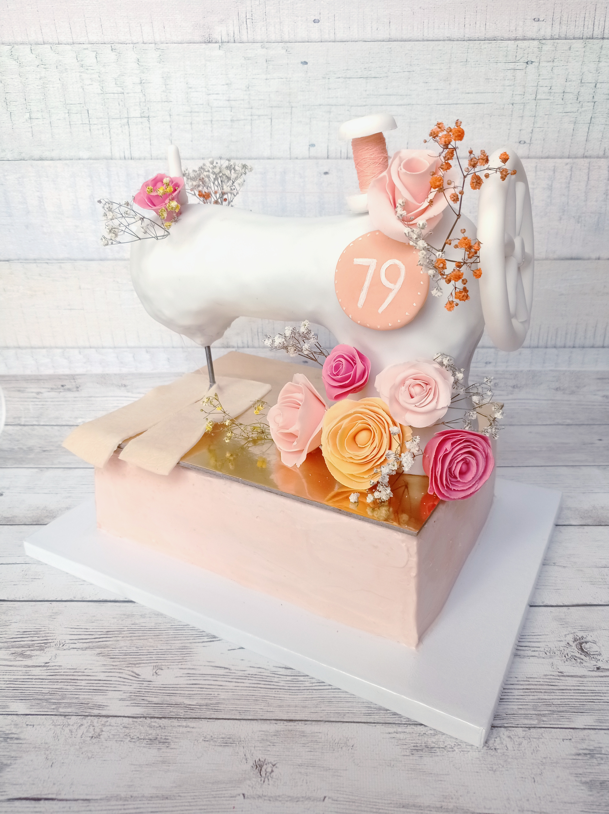

Torty artystyczne
Doskonałe, ręcznie dekorowane torty — każdy projekt to małe dzieło sztuki, tworzone indywidualnie z myślą o Tobie i Twoich upodobaniach
Specjalizujemy się w tworzeniu tortów z figurkami oraz postaciami z jadalnej masy cukrowej, a także efektownych tortów 3D w dowolnym kształcie.
Wybierz motyw i ulubione smaki — my zajmiemy się resztą.